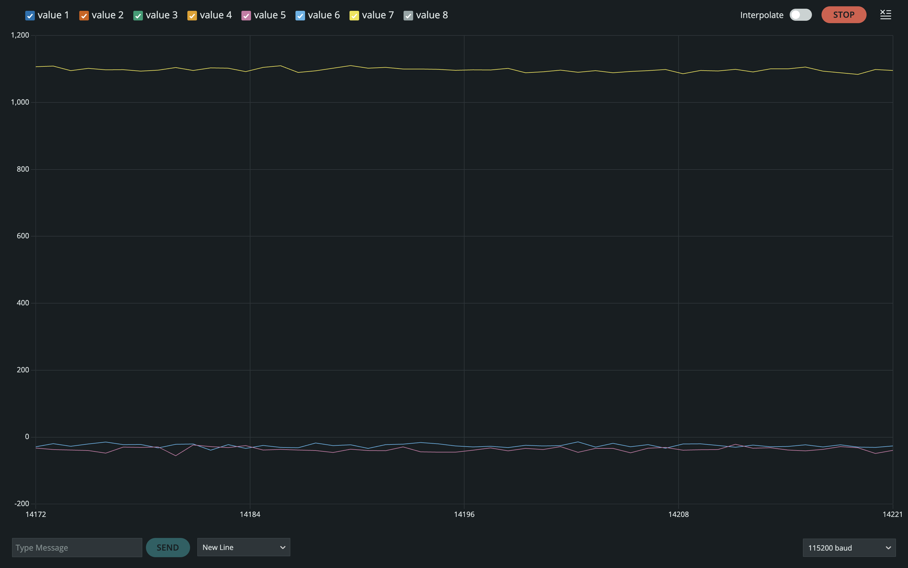
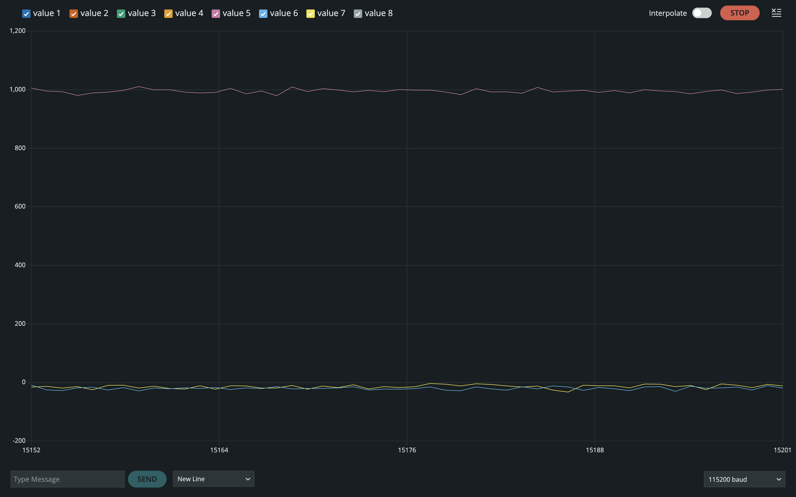

Set Up the IMU
Connections
The ICM-20948 IMU was connected to the Artemis board using the QWIIC connector, which communicates over I2C. The SparkFun 9DOF IMU Breakout – ICM 20948 Arduino library was installed through the Arduino Library Manager.

Example Code Verification
Ran Example1_Basics from the SparkFun ICM-20948 library to verify the
IMU initializes correctly and streams accelerometer, gyroscope, magnetometer, and
temperature (AGMT) data over serial.
AD0_VAL Discussion
The AD0_VAL definition determines the least significant bit of the IMU's
I2C address. The ICM-20948 supports two possible addresses depending on whether
the ADR jumper is bridged:
AD0_VAL = 1→ I2C address0x69(ADR jumper not bridged, default)AD0_VAL = 0→ I2C address0x68(ADR jumper bridged)
On the SparkFun breakout, the ADR jumper is not bridged by default, so the
address is 0x69. The example code already defaults to
AD0_VAL = 1, which matches our board — no change needed.
#define AD0_VAL 1 // default: ADR jumper not bridged → 0x69Acceleration & Gyroscope Data
The board was rotated, flipped, and accelerated by hand to observe sensor responses:
- Accelerometer: Measures linear acceleration including gravity. When flat on a table, the Z-axis reads approximately +1g (≈1000 mg) while X and Y are near zero. When rotated 90° onto its side, gravity shifts to the corresponding axis. Small fluctuations are visible even when stationary, indicating sensor noise.
- Gyroscope: Measures angular velocity (deg/s). Reads ~0 dps when stationary. During rotation, the axis of rotation spikes proportionally to angular velocity, returning to zero once motion stops. Unlike the accelerometer, the gyroscope does not provide absolute orientation — only rate of change.
Flat on table: Z-axis ≈ 1000 mg (gravity), X and Y axes ≈ 0 mg. Gyroscope reads ~0 dps on all axes.

Rotated 90° onto side: Gravity shifts from Z-axis to the side-facing axis, confirming correct orientation sensing.

These noise characteristics motivate the filtering techniques implemented later.
LED Startup Indicator
Added a visual startup indicator — the onboard LED blinks three times slowly on boot to confirm the board is running. This is useful later when operating on battery power without serial access.
// In setup(), before IMU init:
pinMode(LED_BUILTIN, OUTPUT);
for (int i = 0; i < 3; i++) {
digitalWrite(LED_BUILTIN, HIGH); delay(500);
digitalWrite(LED_BUILTIN, LOW); delay(500);
}Accelerometer
Pitch & Roll
Converted accelerometer data into pitch and roll using the standard trig equations:
#include <math.h>
float pitch_a = atan2(myICM.accX(), myICM.accZ()) * 180.0 / M_PI;
float roll_a = atan2(myICM.accY(), myICM.accZ()) * 180.0 / M_PI;Used the table surface and edges as guides to position the IMU at {-90, 0, 90} degrees for both pitch and roll:
Pitch at -90°, 0°, 90°:


Roll at -90°, 0°, 90°:


Jupyter Plotting Function
Wrote a reusable plotting function in Jupyter for visualizing time-series sensor data (will be useful in future labs):
def plot_imu_data(timestamps, data, ylabel, title):
"""Plot IMU data against timestamps."""
plt.figure(figsize=(12, 4))
plt.plot(timestamps, data, linewidth=0.8)
plt.xlabel('Time (ms)')
plt.ylabel(ylabel)
plt.title(title)
plt.grid(True, alpha=0.3)
plt.tight_layout()
plt.show()Accuracy & Two-Point Calibration
Measured the accelerometer output at -90° and +90° for both pitch and roll to assess accuracy and compute calibration factors:
| Angle | Expected (°) | Measured Pitch (°) | Measured Roll (°) |
|---|---|---|---|
| -90° | -90.0 | TODO | TODO |
| 0° | 0.0 | TODO | TODO |
| 90° | 90.0 | TODO | TODO |
Two-point calibration conversion factor:
# Two-point calibration
pitch_measured = [TODO_neg90, TODO_pos90] # measured at -90° and +90°
pitch_expected = [-90.0, 90.0]
scale = (pitch_expected[1] - pitch_expected[0]) / (pitch_measured[1] - pitch_measured[0])
offset = pitch_expected[0] - scale * pitch_measured[0]
# pitch_calibrated = scale * pitch_raw + offsetThe accelerometer is reasonably accurate at known angles, with minor offset errors that the two-point calibration corrects. The readings are noisier during motion but stable when stationary.
Noise Analysis & FFT
To analyze noise, data was recorded in two scenarios: (1) the IMU sitting still on the table, and (2) tapping/hitting the table to induce vibrational noise (simulating what the RC car motors would produce).
Stationary Noise

Vibrational Noise (Table Tap)

Fourier Transform
Performed an FFT on the accelerometer pitch data to identify the frequency spectrum of the noise:
import numpy as np
import matplotlib.pyplot as plt
Fs = TODO # sampling frequency in Hz
data = np.array(pitch_data) # collected pitch time series
# Compute FFT
N = len(data)
fft_vals = np.abs(np.fft.rfft(data))
freqs = np.fft.rfftfreq(N, d=1.0/Fs)
plt.figure(figsize=(12, 4))
plt.plot(freqs, fft_vals)
plt.xlabel('Frequency (Hz)')
plt.ylabel('Magnitude')
plt.title('FFT of Accelerometer Pitch Data')
plt.axvline(x=TODO_CUTOFF, color='r', linestyle='--', label='Cutoff: TODO Hz')
plt.legend()
plt.grid(True, alpha=0.3)
plt.tight_layout()
plt.show()

The FFT shows that the useful orientation signal is concentrated below TODO Hz, while vibrational noise appears at higher frequencies. This suggests a cutoff frequency of approximately TODO Hz.
Low Pass Filter
Implemented a simple first-order low pass filter on the accelerometer data.
The filter constant alpha is derived from the desired cutoff
frequency and the sampling period:
// LPF: alpha = dt / (dt + 1/(2*pi*fc))
// With fc = TODO Hz and dt = TODO s:
float alpha_lpf = TODO;
float pitch_lpf = alpha_lpf * pitch_a + (1 - alpha_lpf) * pitch_lpf_prev;
float roll_lpf = alpha_lpf * roll_a + (1 - alpha_lpf) * roll_lpf_prev;
pitch_lpf_prev = pitch_lpf;
roll_lpf_prev = roll_lpf;Effect of cutoff frequency: A lower cutoff produces a smoother output but introduces more lag — the filter responds slower to real orientation changes. A higher cutoff lets more noise through but preserves responsiveness. The chosen cutoff of TODO Hz balances these tradeoffs.
Before and After Filtering


Gyroscope
Pitch, Roll & Yaw
Computed pitch, roll, and yaw by integrating gyroscope angular velocity over time:
float dt = (micros() - last_time) / 1000000.0;
last_time = micros();
pitch_g += myICM.gyrX() * dt;
roll_g += myICM.gyrY() * dt;
yaw_g += myICM.gyrZ() * dt;Tested at different orientations to verify the integration:

Comparison: Accel vs. Gyro vs. Filtered
Plotted the accelerometer pitch/roll, gyroscope pitch/roll, and LPF-filtered accelerometer data together to compare:

Key differences:
- Accelerometer: Noisy but does not drift. Provides absolute orientation via gravity. Susceptible to vibrations and linear acceleration.
- Gyroscope: Smooth and responsive in the short term, but accumulates drift over time due to integration of small bias errors. Cannot measure yaw from gravity alone.
- LPF Accelerometer: Smoother than raw, but still subject to drift-free noise. Introduces slight lag.
Sampling Frequency
Tested different sampling rates to observe the effect on gyroscope accuracy.
Faster sampling → smaller dt → less integration error per step →
more accurate angle tracking.

At lower sampling rates, the gyroscope drifts more quickly and misses rapid orientation changes. At the maximum sampling rate (~TODO Hz), drift is minimized but still present over long durations.
Complementary Filter
The complementary filter fuses the accelerometer (accurate long-term, noisy short-term) with the gyroscope (smooth short-term, drifts long-term):
float alpha = TODO; // e.g. 0.98
float dt = (micros() - last_time) / 1000000.0;
last_time = micros();
pitch = alpha * (pitch + myICM.gyrX() * dt) + (1 - alpha) * pitch_a;
roll = alpha * (roll + myICM.gyrY() * dt) + (1 - alpha) * roll_a;alpha controls the tradeoff.
Higher alpha (e.g. 0.98) trusts the gyroscope more — smoother output but
slower drift correction. Lower alpha trusts the accelerometer more — less drift
but noisier. Chose alpha = TODO based on observed noise and
drift characteristics.
Demonstrating Accuracy & Stability
The complementary filter was tested across its full working range and under various conditions:
- Range: Verified at {-90, 0, 90} degrees for pitch and roll
- No drift: Left stationary for 60+ seconds — no drift observed
- Vibration rejection: Tapped the table — output remained stable


Sample Data
Speeding Up the Main Loop
To maximize sampling speed, the main loop was optimized:
- IMU data is only read when
myICM.dataReady()returns true — the loop does not block waiting for data - All
delay()calls removed - All
Serial.print()statements commented out during data collection
void loop() {
// Non-blocking: check if data ready, don't wait
if (myICM.dataReady()) {
myICM.getAGMT();
// Compute filtered pitch/roll
float dt = (micros() - last_time) / 1000000.0;
last_time = micros();
float pitch_a = atan2(myICM.accX(), myICM.accZ()) * 180.0 / M_PI;
float roll_a = atan2(myICM.accY(), myICM.accZ()) * 180.0 / M_PI;
pitch = alpha * (pitch + myICM.gyrX() * dt) + (1 - alpha) * pitch_a;
roll = alpha * (roll + myICM.gyrY() * dt) + (1 - alpha) * roll_a;
yaw += myICM.gyrZ() * dt;
// Store if recording
if (recording && data_index < MAX_DATA_SIZE) {
time_array[data_index] = (int)millis();
pitch_array[data_index] = pitch;
roll_array[data_index] = roll;
yaw_array[data_index] = yaw;
data_index++;
}
}
// BLE command handling (non-blocking)
read_data();
}With these optimizations, the main loop runs at approximately TODO Hz. The IMU itself produces new data at ~TODO Hz, so the main loop runs faster than the IMU output rate — no data is missed.
Data Storage Design
Chose to use separate arrays for each data channel rather than one large interleaved array. This makes indexing straightforward and avoids messy struct packing when sending over BLE.
#define MAX_DATA_SIZE TODO
// Separate arrays — one per channel
int time_array[MAX_DATA_SIZE];
float pitch_array[MAX_DATA_SIZE];
float roll_array[MAX_DATA_SIZE];
float yaw_array[MAX_DATA_SIZE];
int data_index = 0;
bool recording = false;int (4 bytes,
millis() fits in 32-bit). Pitch/roll/yaw are stored as float (4 bytes)
since we need decimal precision but double (8 bytes) is unnecessary
for our accuracy requirements.
Memory budget: Each sample uses 4 × 4 = 16 bytes (1 int + 3 floats). The Artemis has ~384 kB RAM with ~350 kB available after globals. This allows up to ~21,800 samples. At TODO Hz sampling, that's approximately TODO seconds of recording — well over the 5s minimum.
5 Seconds of IMU Data over Bluetooth
Added BLE commands to start/stop recording and send stored data:
case START_RECORDING:
data_index = 0;
recording = true;
Serial.println("Recording started");
break;
case STOP_RECORDING:
recording = false;
Serial.print("Recording stopped | ");
Serial.print(data_index);
Serial.println(" samples");
break;
case SEND_IMU_DATA:
for (int i = 0; i < data_index; i++) {
tx_estring_value.clear();
tx_estring_value.append("T:");
tx_estring_value.append(time_array[i]);
tx_estring_value.append("|P:");
tx_estring_value.append(pitch_array[i]);
tx_estring_value.append("|R:");
tx_estring_value.append(roll_array[i]);
tx_estring_value.append("|Y:");
tx_estring_value.append(yaw_array[i]);
tx_characteristic_string.writeValue(tx_estring_value.c_str());
}
Serial.print("IMU data sent | ");
Serial.print(data_index);
Serial.println(" samples");
break;Python Receiver
timestamps, pitches, rolls, yaws = [], [], [], []
def handler_imu(uuid, bytearray_data):
s = ble.bytearray_to_string(bytearray_data)
t = int(s[s.find("T:")+2 : s.find("|P:")])
p = float(s[s.find("|P:")+3 : s.find("|R:")])
r = float(s[s.find("|R:")+3 : s.find("|Y:")])
y = float(s[s.find("|Y:")+3 :])
timestamps.append(t)
pitches.append(p)
rolls.append(r)
yaws.append(y)
ble.start_notify(ble.uuid['RX_STRING'], handler_imu)
ble.send_command(CMD.START_RECORDING, "")
time.sleep(5)
ble.send_command(CMD.STOP_RECORDING, "")
time.sleep(0.5)
ble.send_command(CMD.SEND_IMU_DATA, "")
time.sleep(3)
ble.stop_notify(ble.uuid['RX_STRING'])
print(f"Received {len(timestamps)} samples over {(timestamps[-1]-timestamps[0])/1000:.2f}s")Result


Record a Stunt
Mounted the 850mAh battery in the RC car and spent time driving it around to get a feel for the dynamics: